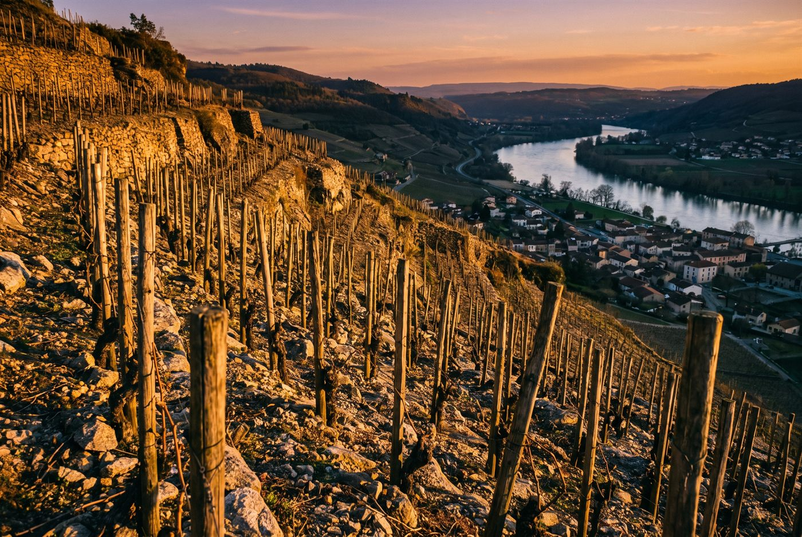

Les domaines · Rhône Nord · Mauves
24
Mauves, Saint-Joseph et Saint-Péray · Rhône Nord
Domaine Bernard Gripa
Des blancs de marsanne et roussanne tendus et des Saint-Joseph de granit, classiques et sans lourdeur.

Ambiance de Mauves
Vignerons à Mauves depuis le XVIIe siècle, les Gripa ont commencé à mettre en bouteille sous leur nom en 1974 avec Bernard, l'un des artisans du renouveau de Saint-Joseph et de Saint-Péray. Son fils Fabrice mène aujourd'hui le domaine, dont la moitié des vignes est plantée en marsanne et roussanne, chose rare dans le secteur. Les sols sont labourés, sans herbicide ni insecticide, et les rouges sont foulés au pied en cuves de bois ouvertes.
Blancs
- Cépage · Marsanne, RoussanneLes meilleurs climats de marsanne du domaine, un blanc de garde d'une quinzaine d'années.
- Cépage · Marsanne, RoussanneVignes de coteau d'une trentaine d'années, élevage en demi-muids de 600 litres.
- Cépage · Roussanne, MarsanneCuvée haute de gamme, vignes de 60 ans sur argilo-calcaire, majoritaire en roussanne.
- Cépage · Marsanne, RoussanneVignes de 40 ans, élevage en demi-muids de plusieurs vins, profil frais et floral.
Rouges
- Cépage · SyrahSélection des plus vieilles vignes du berceau historique de l'appellation, élevée en demi-muids.
- Cépage · SyrahCoteaux granitiques de Tournon et Mauves, environ un quart de vendange entière.
Ces cuvées vous parlent ?
Demander les disponibilités